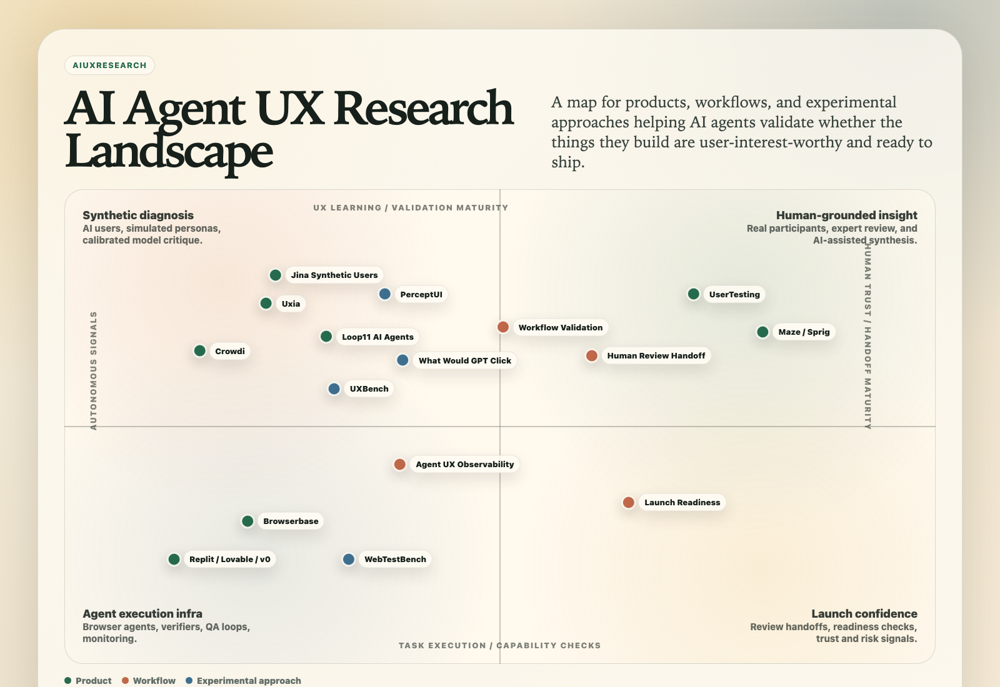

From landscape to a validation loop for AI-generated apps
How might app-building agents get usable, trustworthy UX evidence before they ship? I turned that broad question into a concrete service model, an evidence taxonomy, and a sharper category position.
The challenge
AI agents can generate working applications quickly. Functional software can still be confusing, untrustworthy, or misaligned with the person who needs to use it. The design challenge was to define the experience-quality evidence an agent could request, understand, and act on.
Intermediate artifact: make the market legible
Before choosing a product shape, I made the category visible. The landscape separates research platforms, synthetic testing, browser agents, and builder-native tools so each category has a distinct role in the emerging space.

My approach
I mapped the emerging market across synthetic testing, browser agents, researcher-facing platforms, and app builders. That analysis clarified the product opportunity: an autonomous validation loop that a builder agent can call directly.
Submit a URL, workflow, audience, and success criteria; return structured findings, evidence, severity, and suggested next actions.
I then organized the problem space—from wayfinding and affordance clarity through trust, accessibility, escalation, and evidence calibration—so the service could make its boundaries explicit and route high-stakes or uncertain findings to human confirmation.
What changed
- Moved from a broad “UX research platform” concept to a focused task-based validation wedge.
- Defined the request-and-results loop as the primary product experience.
- Made calibration a product requirement: synthetic signals can guide triage, while high-stakes or uncertain findings need human confirmation.
- Kept a distinct alternate opportunity visible: agent UX observability for flow-based personal agents.
Why it matters
The result is a more accountable AI product concept: agents can improve faster while each conclusion stays within the reach of its evidence. The work centers the interaction contract, provenance, and escalation rules needed to make automated UX feedback useful enough to trust.